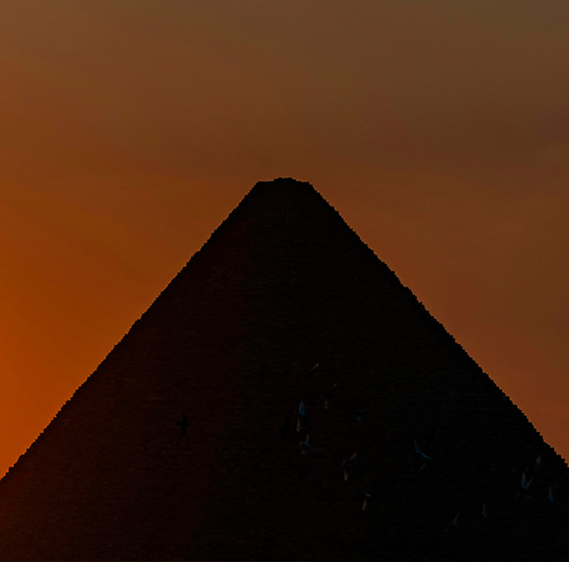
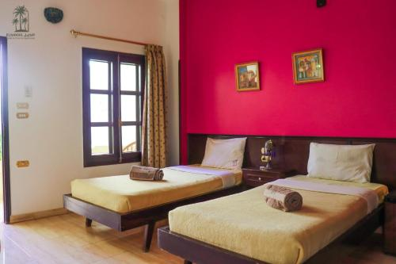
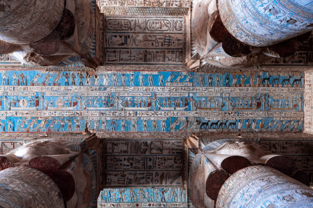
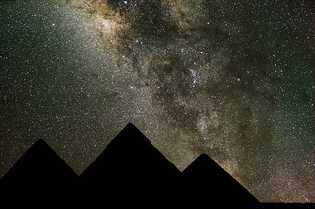

Las estrellas en egipto
Descripción
Un viaje astronómico y cultural en el corazón de Egipto. Cuatro días y tres noches.
En Egipto, la experiencia estará centrada en la relación entre el cielo, la religión y la ciencia en
una de las civilizaciones más fascinantes de la historia.
Las visitas incluirán lugares históricos de Luxor y Asuán, donde muchos templos fueron alineados con
fenómenos astronómicos específicos, como la salida del sol o determinadas constelaciones. También se
explorará la importancia espiritual y mística del cielo en la cultura egipcia, descubriendo las
creencias relacionadas con dioses celestes, el viaje de las almas y la conexión entre las estrellas
y la vida después de la muerte.
Durante las noches, la experiencia continuará con observaciones astronómicas en zonas desérticas, ideales para contemplar el cielo del Sahara. Guías especializados explicarán tanto los conocimientos científicos desarrollados por los antiguos egipcios como las leyendas y simbolismos religiosos asociados a los astros.
Estadía en : Hotel en Luxor con vistas al río Nilo, situado cerca de los principales templos históricos y preparado para excursiones nocturnas de observación astronómica.
Precio del viaje : 1.650 € por persona. Incluye vuelos de ida y vuelta a Egipto, alojamiento durante cuatro días y tres noches, desayuno, visitas guiadas a templos y monumentos históricos, excursiones nocturnas para observar las estrellas y actividades culturales relacionadas con la astronomía y la astrología del Antiguo Egipto.
Mejor epoca del año
Noviembre es una de las mejores épocas del año para la observación astronómica en Egipto. Durante estas fechas, las temperaturas nocturnas en el desierto son más agradables y los cielos suelen permanecer despejados, ofreciendo condiciones ideales para contemplar las estrellas con gran visibilidad.
Itinerario
>Día 1 - Llegada a Luxor y primer contacto con el Nilo
Instalación, centro histórico y cielo nocturno · 15:00 - 23:30
La experiencia comienza con el vuelo desde España y la llegada a Luxor, una de las ciudades más emblemáticas del Antiguo Egipto. Tras el traslado al hotel, los viajeros dispondrán de tiempo para instalarse y descansar después del viaje.
Por la tarde se realizará una primera visita guiada por el centro histórico y la ribera del Nilo, donde se introducirá la relación entre la astronomía y la religión en el Antiguo Egipto. Al caer la noche, se llevará a cabo la primera sesión de observación del cielo en una zona alejada de la contaminación lumínica.

Día 2 - Templos y astronomía egipcia
Luxor y Karnak · Cultura astronómica antigua · 08:00 - 22:30
La jornada comienza con el desayuno y la salida hacia los templos de Luxor y Karnak, dos de los complejos arqueológicos más importantes de Egipto. Durante la visita se explicará cómo muchas estructuras estaban alineadas con fenómenos astronómicos, el movimiento del sol y la posición de determinadas estrellas.
También se profundizará en los calendarios egipcios y el papel del cielo en la vida religiosa y cotidiana de la civilización antigua. Por la noche, se realizará una actividad astronómica guiada en el desierto bajo un cielo completamente despejado.

Día 3 -Mitología egipcia y observación en el desierto
Valle de los Reyes y entorno del Sahara · Cultura y estrellas · 08:30 - 23:30
El día estará dedicado a la exploración cultural de la región, con una excursión a zonas cercanas al Valle de los Reyes y espacios vinculados a rituales funerarios y simbolismo astral.
Se abordarán las creencias egipcias sobre las estrellas, los dioses celestes y la vida después de la muerte. Al anochecer, se realizará la experiencia principal de observación astronómica en el desierto del Sahara, combinando explicaciones científicas y mitológicas bajo uno de los cielos más claros del mundo.

Día 4 - Regreso a España
Traslado y cierre del viaje · 08:00 - 14:00
Después del desayuno en el hotel, los viajeros dispondrán de tiempo libre para descansar o realizar las últimas actividades personales. Posteriormente se realizará el traslado al aeropuerto para el vuelo de regreso a España, finalizando así la experiencia en Egipto.


Nota importante: Los programas descritos son susceptibles de cambios por razones puntuales ajenas a nuestra organización, tales como condiciones meteorológicas o de seguridad.
Observaciones
- Si alguien tiene alergia o intolerancia a algún tipo de alimento deberá comunicarlo a la agencia para prever incidentes inesperados que cundan el panico.
- Si alguien tiene algún tipo de enfermedad que afecte a la respiración, resistencia o movimiento, deberá comunicarlo a la agencia para prever una mayor seguridad y adaptación.
- Si traen menores de edad o acompañan a personas con necesidades especiales, manténganse pendientes de ellos y no se separen en ningún momento. Recuerden presentárselos a los guías e informarles de todo lo necesario que deban tener en cuenta.
- Cualquier siniestro sucedido durante el viaje o emergencia médica será responsabilidad económica de la propia persona afectada. Los costes correrán por cuenta del viajero. Se le acompañará o transportará a la zona de asistencia médica más cercana y, si es posible, el grupo continuará su recorrido.Si el viajero se recupera a tiempo para el regreso, será reincorporado al viaje. En caso de que no sea posible, deberá ponerse en contacto con sus familiares, amigos u otras personas de confianza para poder regresar a su hogar cuando esté recuperado.
Gastos de anulación según fecha de salida
| HASTA | IMPORTE |
|---|---|
| Más de dos meses de anticipación | 0% |
| Un mes de anticipación | 40% |
| Una semana de anticipación | 80% |
| El dia del viaje | 100% |
Conforme más se acerque a la fecha de salida el importe que se le quitara a su viaje sera mayor.
El precio incluye
- Alojamiento completo
- Guía especializado
- Billete de avión
- Excursiones nocturnas
El precio no incluye
- Transporte interno
- Comidas y cenas
- Seguro opcional
- Gastos personales
Preguntas frecuentes
Aprende mas sobre tu viaje, no te pierdas nada.
El viaje incluye vuelos, alojamiento en Luxor, traslados internos, visitas guiadas a los templos de Luxor y Karnak, excursiones culturales y actividades de observación astronómica en el desierto.
Sí. Todas las actividades se realizan con guías locales especializados y en zonas turísticas controladas. Además, los desplazamientos y excursiones están organizados para garantizar la seguridad del grupo en todo momento.
El alojamiento se realiza en El Nakhil Hotel en Luxor con servicios básicos y cómodos, pensado para el descanso entre excursiones y actividades nocturnas.
No. Todas las visitas y actividades incluyen explicaciones adaptadas para cualquier viajero, tanto sobre la historia del Antiguo Egipto como sobre astronomía y mitología.
Las temperaturas pueden ser elevadas durante el día, especialmente fuera de temporada de invierno. Se recomienda ropa ligera, protección solar y mantenerse hidratado durante las excursiones.
Las sesiones de observación dependen de las condiciones meteorológicas, pero el desierto de Luxor ofrece uno de los cielos más despejados del mundo, lo que aumenta mucho las posibilidades de una buena experiencia.
Se recomienda ropa cómoda y ligera, calzado adecuado para caminar, protección solar, gafas de sol, y algo de abrigo ligero para las noches en el desierto..